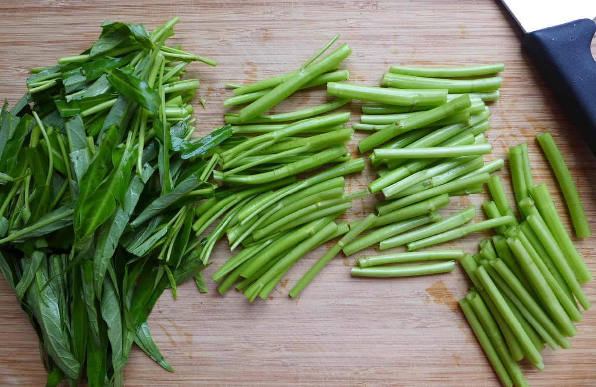
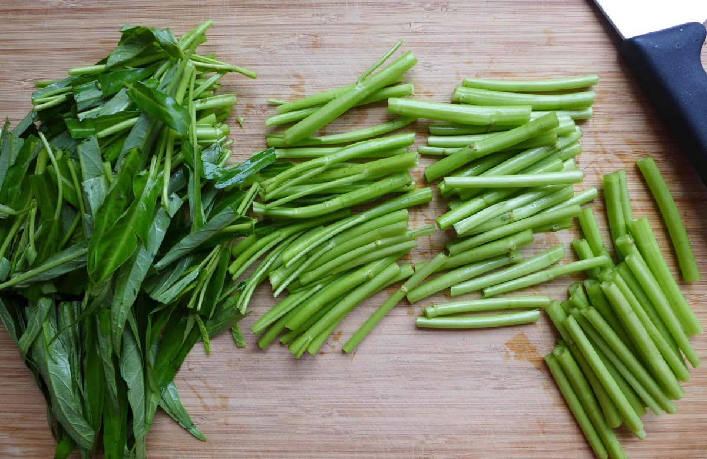

HOME
Pork Sinigang

This is a Sour Pork Sinigang we will be making!
Sinigang is a sour soup native to the Philippines. This recipe uses pork as the main ingredient. Other proteins and seafood can also be used. Beef, shrimp, fish are commonly used to cook sinigang.
There are couple of variations in cooking sinigang, but I will be giving you the easiest way to cook it! Note that this is my personal recipe for sinigang since I'm so lazy and I don't want to make cooking stressful.
First, you're gonna need the following ingredients!
- 1 lbs Pork Belly
- Sinigang Mix(also known as Tamarind Soup Mix)
- Water Spinach
- 5 pcs String Beans
- 1 small Eggplant
- 1 small Daikon Radish
- Long green pepper
Now let's get cooking once you got everything ready!
- First, slice everything. Refer to the photos bellow on how to slice each ingredients.For the long green pepper, you don't need to slice it.
 

- Put the Pork in a hot boiling water of about 1 liter. Wait for it to soften, it takes about 15-25 minutes. If you notice that the water evaporated, don't worry, just add some more water so you won't run out of soup!(note: you can slice the pork in advance and boil it while slicing the other ingredients.)
- Once the Pork is soft enough you can put all the other ingredients except for the water spinach and long green pepper as these can be overcooked easily. Wait for around 3-5 minutes, we want them to be half cooked for now.
- Once the veggies are half-cooked, you can now put the Water Spinach, Long Green Pepper and at the same time add the Sinigang Mix or Tamarind Soup Mix. You can add around 20g of the seasoning, more or less, just make sure it ain't too sour and not too bland either. If you don't want it to be too sour just add a little and try to taste it until your satisfied with the sourness.
Here's a photo of a Tamarind Soup Mix, the famous brand in the Philippines is Knorr. Check out your grocery stores if they have something similar.

- You're almost done cooking and all you need to do is add some salt and pepper taste! You may also add some MSG as well for a more heavenly taste but take note that some Tamarind Soup Mix already has it's own MSG, so consider it supplemental.
- Lastly, put the soup in a bowl and pair it with a heck ton of rice!
That's it! Enjoy your meal and again trust me, it's best to eat it with RICE!